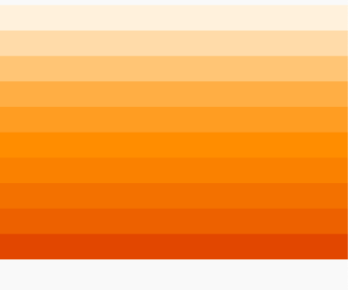
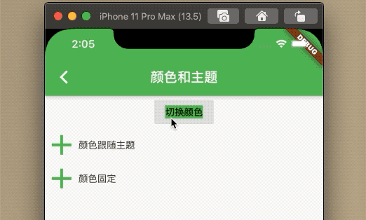
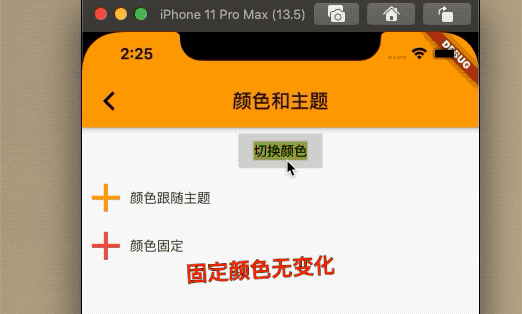

7.4.1 颜色
首先了解一下Color类。在Flutter中，Color是保存一个32位的int,那么rgba分别怎么体现呢？我们看下表格
| Bit 范围 | 颜色 |
|---|---|
| 0-7 | blue 蓝色 |
| 8-15 | green 绿色 |
| 16-23 | red 红色 |
| 24-31 | alpha 透明度 |
那么颜色就是由这三种颜色和透明度组成的，8位int范围是[0--255]，所以每个值最大是255，最小是0.
我们看下构造函数：
该函数的参数r是红色，范围是[0-255],g是绿色、b是蓝色，a是透明度，范围也是[0,255]，当a=0,则是完全透明度，当a=255,则完全不透明。
Color.fromARGB(int a, int r, int g, int b)
下边这个构造函数只有opacity范围变成了[0--1],其他没变。
Color.fromRGBO(int r, int g, int b, double opacity)
Flutter除了Color类，还有MatarialColor类，也是表示颜色的。
MatarialColor
MatarialColor是Color的子类，实现了Matarial Design中颜色的类，包含了10个渐变的颜色,可以通过[50]来得到颜色的深度，索引包含[50]、[100]、[200]、[300]、[400]、[500]、[600]、[700]、[800]、[900]，颜色越大，颜色越深。
其实这个[]是操作符，看下源码了解到其实是MatarialColor的父类ColorSwatch中有个属性Map<T,Color> _swtch存储的值
/// ColorSwatch
Color operator [](T index) => _swatch[index];
teal是MaterialColor类，看下它的实现。
static const MaterialColor teal = MaterialColor(
_tealPrimaryValue,
<int, Color>{
50: Color(0xFFE0F2F1),
100: Color(0xFFB2DFDB),
200: Color(0xFF80CBC4),
300: Color(0xFF4DB6AC),
400: Color(0xFF26A69A),
500: Color(_tealPrimaryValue),
600: Color(0xFF00897B),
700: Color(0xFF00796B),
800: Color(0xFF00695C),
900: Color(0xFF004D40),
},
);
看下效果：

Theme
Theme组件可以实现定义组件的主题，包含按钮，文本，bar。。。，子部件都会继承该效果。
ThemeData
ThemeData用于保存Material组件库的主题数据，组件的规范都定义在ThemeData中，所以可以通过THemeData来自定义注意，在子部件可以通过Theme.of(ctx)获取当前的ThemeData.
看下ThemeData的部分数据：
ThemeData({
Brightness brightness, //深色还是浅色
MaterialColor primarySwatch, //主题颜色样本，见下面介绍
Color primaryColor, //主色，决定导航栏颜色
Color accentColor, //次级色，决定大多数Widget的颜色，如进度条、开关等。
Color cardColor, //卡片颜色
Color dividerColor, //分割线颜色
ButtonThemeData buttonTheme, //按钮主题
Color cursorColor, //输入框光标颜色
Color dialogBackgroundColor,//对话框背景颜色
String fontFamily, //文字字体
TextTheme textTheme,// 字体主题，包括标题、body等文字样式
IconThemeData iconTheme, // Icon的默认样式
TargetPlatform platform, //指定平台，应用特定平台控件风格
...
})
例子：实现一个按钮换肤功能;
class _BaseColorAndThemeState extends State<BaseColorAndTheme> {
Color _color;
@override
Widget build(BuildContext context) {
ThemeData themeData = Theme.of(context);
return Theme(
child: Scaffold(
appBar: AppBar(
title: Text('颜色和主题'),
),
body: _body(),
),
data: ThemeData(
primarySwatch: _color,
iconTheme: IconThemeData(color: _color),
textTheme: TextTheme(button: TextStyle(backgroundColor: _color))),
);
}
Widget _body() {
return Center(
child: Column(
children: <Widget>[
FlatButton(
child: Text('切换颜色'),
color: Theme.of(context).buttonColor,
onPressed: () {
setState(() {
// _iconColor = Colors.orange;
_color = _color == Colors.orange ? Colors.green : Colors.orange;
});
// Navigator.of(context)
// .push(MaterialPageRoute(builder: (ctx) => _BaseRoutePage()));
},
),
Row(
children: <Widget>[
Icon(
Icons.add,
size: 50,
),
Text('颜色跟随主题')
],
),
Row(
children: <Widget>[
Icon(
Icons.add,
color: Colors.green,
size: 50,
),
Text('颜色固定')
],
),
],
),
);
}
@override
void initState() {
_color = Colors.teal;
super.initState();
}
}
效果;

Theme = context.dependOnInheritedWidgetOfExactType<_InheritedTheme>();
context.dependOnInheritedWidgetOfExactType会按照widget树向上查找_InheritedTheme,有的话则返回，无的话null.
当多级Theme嵌套，则距离widget向上最近的才会有效果。
例子：
Theme(
child: Row(
children: <Widget>[
Icon(
Icons.add,
size: 50,
),
Text('颜色固定')
],
),
data: ThemeData(
iconTheme: IconThemeData(color: Colors.red),
),
)
效果;
